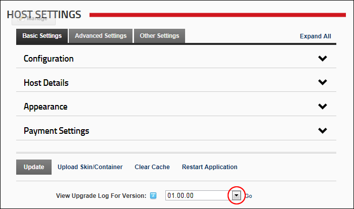

Viewing the DNN Version Upgrade Log
How to view the database log file for any SQL scripts which have been executed.
- Navigate to Host >
 Host Settings.
Host Settings.
- At View Upgrade Log for Version, select the version number from the drop down list. Other options are DotNetNuke.Data, DotNetNuke.Schema and UnInstall log files.

- Click the Go button. If a log file exists for the selected version it is now displayed. If no log file exists a message reading "A log file does not exist for the script version specified. This generally indicates that the script was never executed..." is displayed.